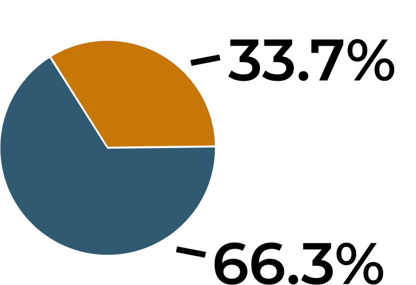
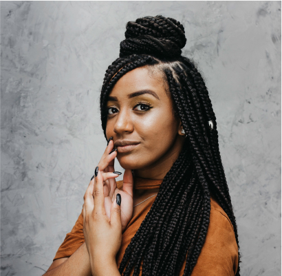
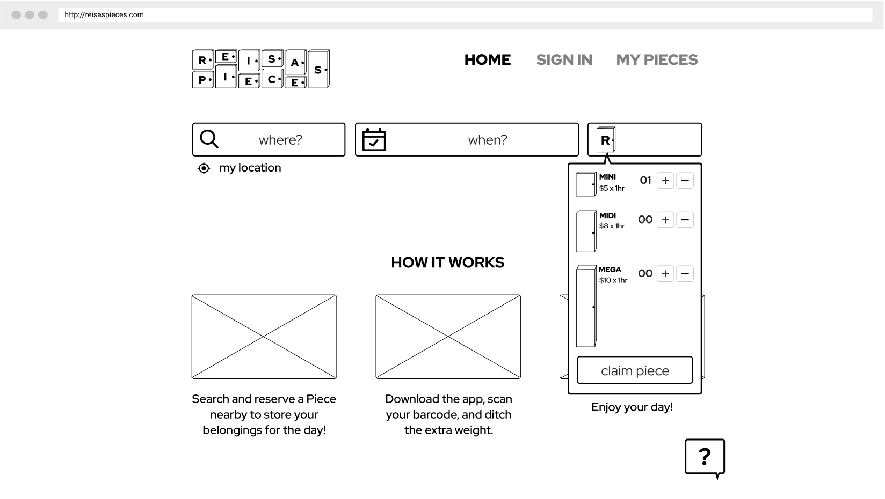
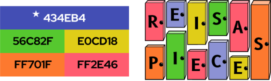

Reisa’s Pieces is a short-term storage company designed to give users the ability to prepare for a busy day, without being weighed down!
Summary
Reisa's Pieces is a daily storage facility designed to give users the ease of being well prepared for a full day’s worth of activities, without the extra weight. Lockers are rented through a reservation only, which can always be done beforehand on your computer, or at any moment through the app.
Problem
Now let me ask you:
Ever arrived at your hotel too early to check-in and wish you had a secure option to store your belongings?
Ever had a full day of activities planned and no time to go back to your hotel to grab that extra layer?
Ever gone to a sporting event where a bag is not permitted on the premises, and wished you could securly store your belongings?
Solution
Then Reisa’s Pieces is for you! These facilities are located all around the US in regular high traffic areas, seasonal attractions, and near select college campuses. There is a live chat available 24/7 to offer assistance to users, and entry into the locations will be granted 24/7 as well by using a barcode that’s automatically loaded onto your app once you’ve rented your piece. This barcode stays available on your phone until your belongings are removed from your piece and your rental is over.
Process
The idea for Reisa’s Pieces came about a few years ago when I was with my family on summer vacation. We were taking a boat to another island for the day, and I found myself wishing I could bring a dry change of clothes for after our water activities, an extra pair of shoes for dinner that evening, and a sweater since it's always colder at night. But who wants to carry a heavy bag, large enough to fit everything you need all... day... long.
The process I followed while creating Reisa's Pieces was a mixture of personal experience and extensive research. I began by conducting a detailed study of user research, competitive analysis, user personas, and a journey map. I built upon that information by creating a strategy that consisted of user stories & flows, wireframes, branding, high fidelity mockups, and user testing. After various iterations based on my users’ feedback, I created the final version you see here today!
Competitive Analysis
I started out by studying various short-term storage facilities- The three companies I researched are LuggageHero, Stasher, and Nannybag which are all based in the UK but offer international services. What I found to be most interesting is that they ONLY offer storage through third-party companies, rather than using their own facilities. I also noticed that bicycle storage is widely sought but difficult to come by- even though Nannybag has a wider range of accommodations, it still has restrictions related to liability concerns of what they can and can’t store for customers. I quickly noticed that luggage storage for tourists is a fairly new concept, which is a plus- without a ton of competition already on the market it’s easier to stand out.
User Research
This led me to my next step, which was to conduct a survey. The cool part about this survey was that you could actually see the users' thought processes evolve as they progressed through the survey. At the beginning, when asked if they’d ever felt inconvenienced by carrying around all of their potential necessities throughout a busy day, only a little over 65% of people said yes. However, by the end of the survey, when the participants were presented with real-life situations and then presented with the same option of using short-term storage in those times of need, the number of people who said they would use this service jumped up to about 80%.
66%
feel it is inconvenient to have to carry all of their belongings with them throughout a busy day.
81%
experience the inconvenience of being stuck with their belongings while traveling both domestically and internationally.
78%
would use temporary storage for daily necessiies such as umbrellas, or when attending events where bags are not permitted.

Do you find it inconvenient to have to carry around all of your potential necessities throughout a busy day?
Have you ever found yourself somewhere with luggage that you wish you could temporarily store for a few hours?
Have you ever experienced unpredictable weather and wished you could store your umbrella, boots, jacket, etc?
User Personas
After analyzing the survey results, I proceeded to connect with two of the survey participants and conducted follow-up interviews with each of them. From there, I was able to create user personas and finally put some names to faces! Clara is a full-time mom and Susan is a career-driven individual. While their lifestyles are very different from one another, the unifying factor is simple: a lack of spare time.
Finance Professional
Ryan R.
28 | Accountant
New York, NY
“I might want an annual membership if it's modeled similarly to Citi Bike.”
GOALS
- To not be weighed down by necessities for a busy day
- Convenient locations to store personal items
FRUSTRATIONS
- Lives in NYC and does not have the opportunity to go home between activities
- The physical weight of carrying daily necessities is unpleasant
Stay-At-Home Mom
Anna F.
45 | Freelance Artist
Long Island, NY

“When I take the train to NYC, I wish I could store my valuables somewhere safe.”
GOALS
- Store personal belongings in a secure facility
- Be prepared for a full day without the extra weight
FRUSTRATIONS
- Heavy bags are difficult to carry around without a car to store them in
- Feels that buildings aren’t secure when holding large bags at concerts & exhibits
Tourist
Lola L.
35 | Teacher
Mexico City, New Mexico
“It’s hard to travel light with a family. I wish I didn’t have to carry everything.”
GOALS
- Make traveling with a family easier
- Be prepared for a full day without being tied to the extra weight
FRUSTRATIONS
- A family of 4 has too much baggage to carry around for an extended period of time
- Not enough time to go back to the hotel between day and night time activities
User Stories & Flows
Now it was time to create some User Stories and prioritize what features are most important to both new and returning users. Based on my survey results and follow-up interviews, I started to compose a list of what those features might be. I focused mainly on High Priority tasks. However, knowing that ideas are constantly evolving, I decided to include a few Medium and Low Priority tasks as well.
With my User Stories in place, I was able to identify what functions are the most important. I focused primarily on the High Priority tasks and, with a pen and paper, began to draw rough drafts of what those processes might look like. I referenced the companies I studied in my Competitive Analysis as well. This was extremely useful because there are generic layouts already in place for things such as onboarding and searching for an available facility. Because Reisa’s Pieces differs from other short-term rental companies in that they use their own facilities, the main question that arose for me was, “How will the check-in/check-out process work?” In addition, what I found to be most challenging was that I wanted to give users the option to choose any method of finding a locker that appealed to them. This meant allowing the user to onboard before searching, or to search before onboarding, and then intertwining those two tasks in a fluid way. Based on my sketches, I created a more refined version of my User Flows. I used Whimsical to generate this second copy- pictured below is the searching/onboarding flow.
Journey Map
Combining my User Personas with my User Flows, I began imagining what a day in the life would look like for someone utilizing Reisa's Pieces. Since children usually need with more "stuff" than adults, I decided to focus on Lola who is visiting NYC with her family. I explored both the pros and cons of a temporary storage facility, as well as focusing on the opportunities to resolve those potential cons.
Wireframes
Just as I did with my User Flows, I started designing my wireframes with a pen and paper first. I began designing and bringing my User Flows to life. Once I felt that I had thoroughly covered all of my High Priority tasks, I used Figma to generate a digital version.

Branding
Now that we were cooking, it was time to add some branding and decide how I wanted to shape Reisa’s Pieces aesthetically. I had already picked out the name of this site since the idea originated almost a year ago- it’s catchy because it’s a play on Reese’s Pieces, includes my name which is unique and marketable, and a pun: referring to lockers as pieces. I decided that blue would be the main accent color used throughout the site- however, I knew I wanted a loud and colorful color palette to play with. Reisa’s Pieces prides itself on being an all inclusive company that caters to anyone and everyone. Their only goal is to make life on-the-go more fun, lightweight, and trouble-free!
At first, I thought about using Charm for the logo because it had the length I was looking for and fit well within the lockers vertically. However, when the logo was shrunken down to mobile-view, the script appeared busy and difficult to read. I decided to switch gears and use B612, which translated much better! It too, had enough length to fill up the lockers appropriately but is bold, clean, and looks like a typical font you’d see on lockers in real life.

High Fidelity Mockups — 1st Draft
Using my Style Guide, I began crafting my Wireframes. I decided to work with the onboarding process, searching for and reserving a locker (aka “a piece”), how to set your pin (used to lock and unlock your locker), and how to add time to your reservation. After receiving feedback from a senior designer, I implemented a few suggested revisions to my mockups...
LOGO
Limited the color selection and adjusted the opacity of the lockers to make the text more readable.
HOW IT WORKS
Final Step - Posting
Added a quick written description at the top, and altered the images to better explain how Reisa's Pieces works.
SEARCH
Header Layout - Listing
3/5 people preferred the double border on the header over the single line beneath it, which I disagreed with. I still felt that the single underline layout has a cleaner presence, and decided to stick with that version.
DATE & TIME
Final Step - Posting
4/5 people preferred “10 Points” in red over black, which I agreed with.
MAP
Header Layout - Listing
3/5 people preferred the double border on the header over the single line beneath it, which I disagreed with. I still felt that the single underline layout has a cleaner presence, and decided to stick with that version.
Prototype & Usability Test
Using my updated mockups, I created a prototype in Figma. While each subject was asked to perform the same tasks, there were some slight differences in how each user was asked to onboarded the app (ie Facebook, Username & Password, etc). All three subjects navigated their way through the app with ease for the most part, and had a few useful ideas and suggestions.
High Fidelity Mockups — 2nd Draft
Using my Style Guide, I began crafting my Wireframes. I decided to work with the onboarding process, searching for and reserving a locker (aka “a piece”), how to set your pin (used to lock and unlock your locker), and how to add time to your reservation. After receiving feedback from a senior designer, I implemented a few suggested revisions to my mockups...
Conclusion
To tie things up, I found that User Surveys were extremely useful in identifying specifically what my user’s needs were. I also relied heavily on my Competitive Analysis while creating my User Stories and User Flows- my thorough SWOT analysis proved to be extremely valuable. I decided what direction I wanted to go in with the branding of my project pretty early on in the color palette department, but picking the proper typography was a bit more challenging. Because it can sometimes be challenging to “get out of my own head”, my Usability Tests/User Research as well as the feedback I received from both my mentor and the senior designers, was what I found to be the most beneficial while creating Reisa’s Pieces.
The most difficult User Flow to bring to life was integrating the process of searching for an available locker with the onboarding process. This is where the bulk of my time went while working on both my High Fidelity Mockups and Prototype. When testing my final version of my refined mockups, my users were all very clear on what the app’s purpose and vibe was and said things like “I’d totally use this!” and “This is cool!” proving once again that it is a beneficial service to the general public. Ultimately I am satisfied with how my product turned out, and hope you are too!